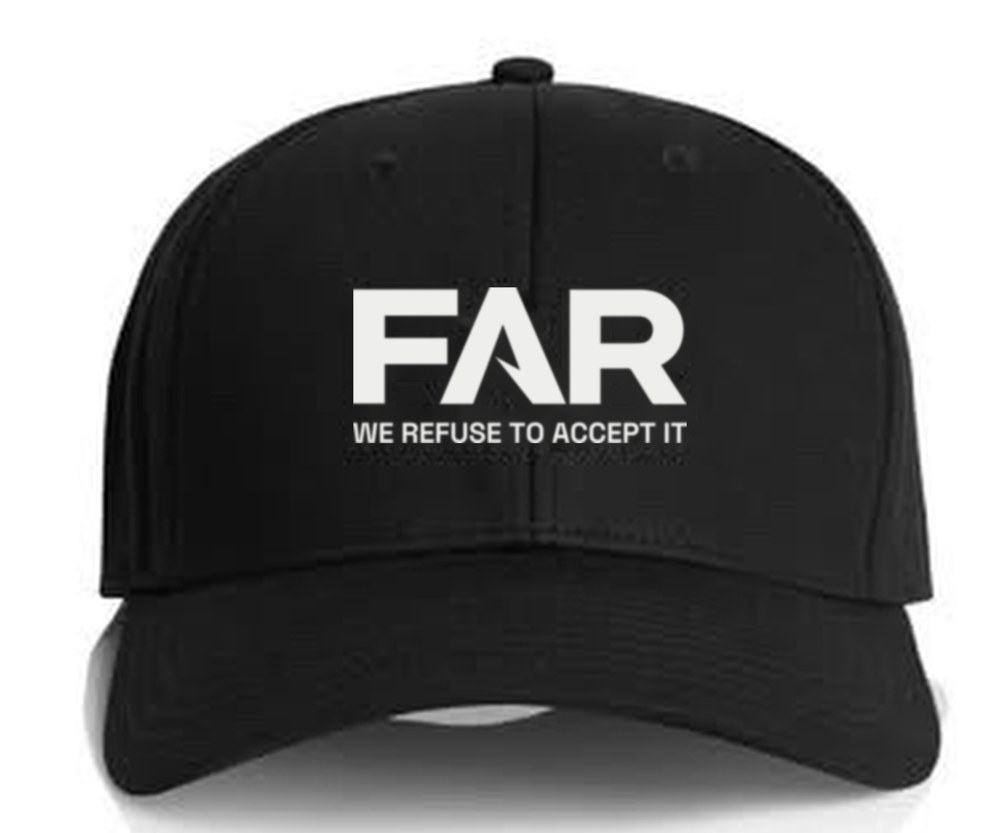
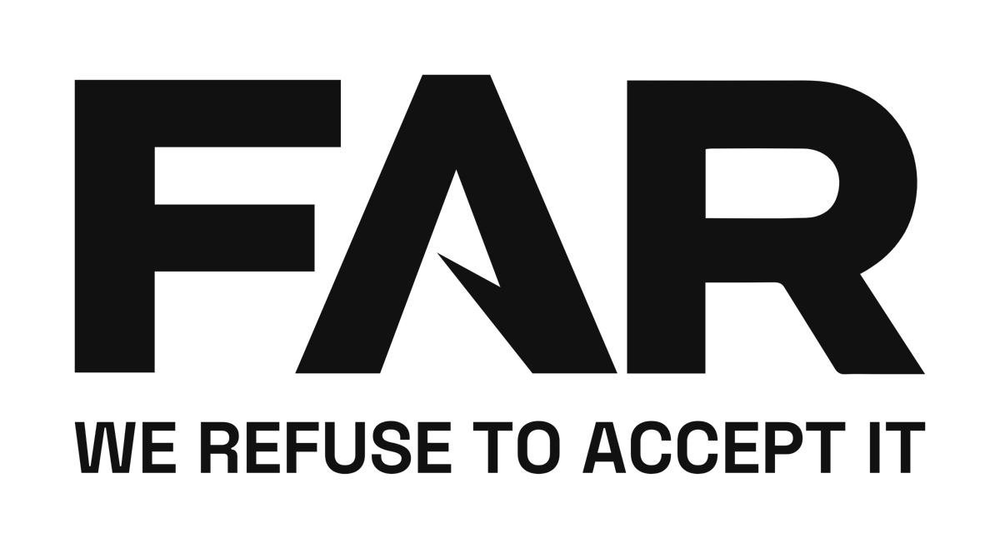
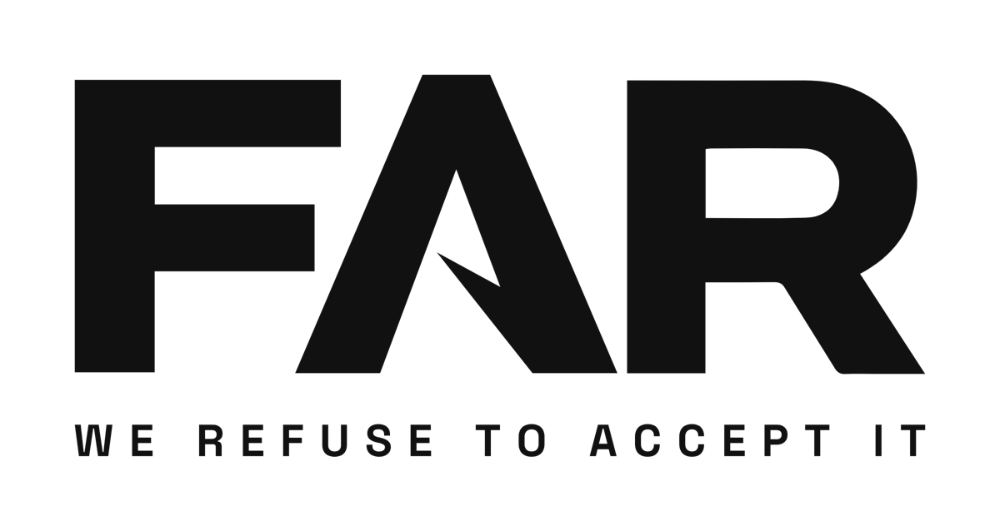
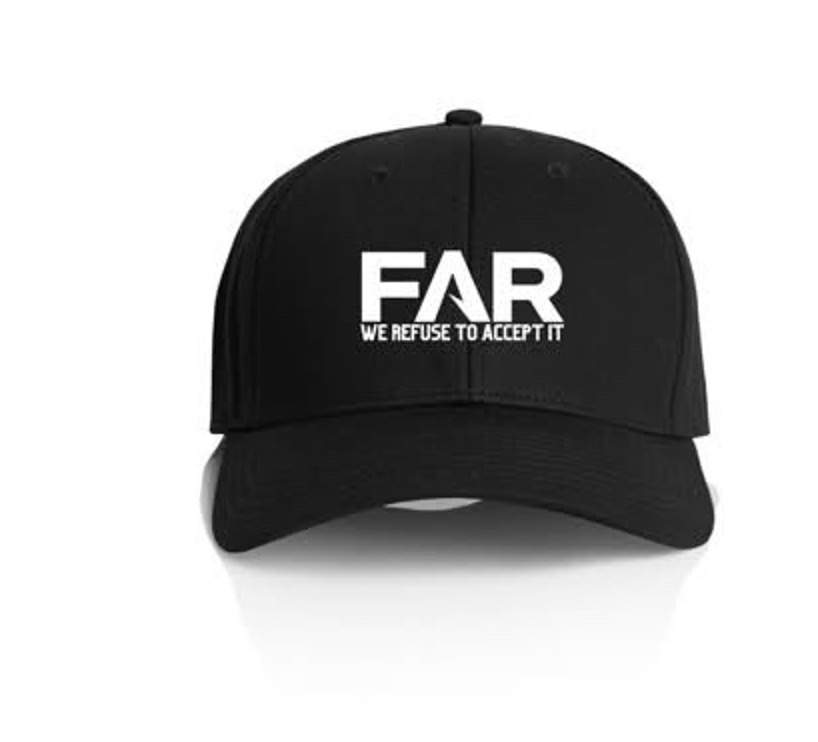

11 Oct 2026. The logo for caps, tees and stubby holders. Pick one.

The new logo dropped onto Lionel's cap photo, to show size and placement. Not a product photo: the factories' digital proofs show the real stitching.


The tagline runs the full width of FAR, lined up with the F and the R. Big enough to embroider: on a cap, stitched letters need to be about 5mm tall to read, and this is the only option that gets there.

Smaller and centred. The weakest of the three: not as strong as A, not as clean as C.

Small letters, wide spacing. The most premium look, the way big brands sign off. Too small to stitch, so it only works printed: the back of a tee, a stubby holder.

Same idea. The new file fixes the font (ours, not a stock condensed one) and lines the tagline up with the logo.
| Tees | 100 black, 200 to 220gsm, same print as last time plus the tagline on the back. Asked Molly (Xiame, who made our first 30) and Annie (Yiwu Kate). |
| Caps | 100 black 6-panel, curved brim, logo embroidered on the front. Asked Winnie (Xuzhou Huihua) and Gi Gi (Dongguan Fitwell). |
| Stubby holders | 300 black, white logo. Asked Carol (Wuhan Jarmoo) and Holywish. Carol says 1 to 2 weeks to make them, and she's checking whether 20 November is possible. |
Every quote asked for air freight to 2500 included and a sewn MADE IN CHINA label on the clothing, which Australian customs needs.
The files live in the FAR workspace. This link is unlisted, but anyone holding it can open it.